Every device, upright and sideways
Four seats: you, Colin on Ghalta, Peter on Ghoulcaller Gisa, Dee. Clavileño is the light art: the showcase printing when it sits at your edge (upright), the extended-art printing at Dee's end (sideways). Sai and Gisa are the dark seats; note that even Sai dips under 3:1 on its bright thopters at phone width. Every seat has just pressed: three taps down, except one seat pressed up so a gain shows beside the losses. The zooms are the same frames at 2×, centred on the figure, with the measured contrast of its ink over the pixels behind it.
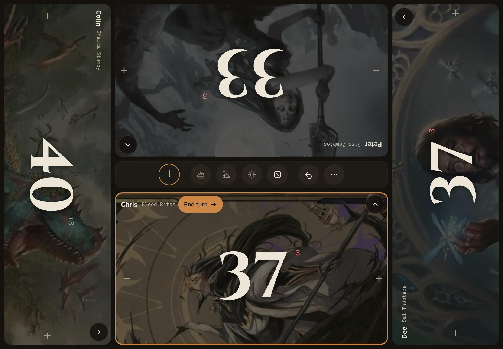
Tablet · now
Clavileño's −3 is pale on the wings.
Tablet · drawn
Halo under every figure; on Colin's and Dee's dark art it all but vanishes.
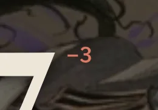
worst 2.45 · p5 3.68 · median 4.84

worst 4.64 · p5 5.29 · median 5.88
worst 2.99 · p5 3.83 · median 5.62
worst 4.62 · p5 5.41 · median 6.12
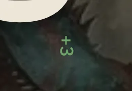
worst 3.43 · p5 3.70 · median 4.28
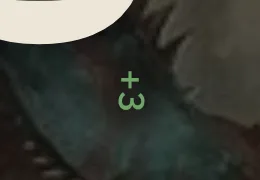
worst 5.05 · p5 5.32 · median 5.60
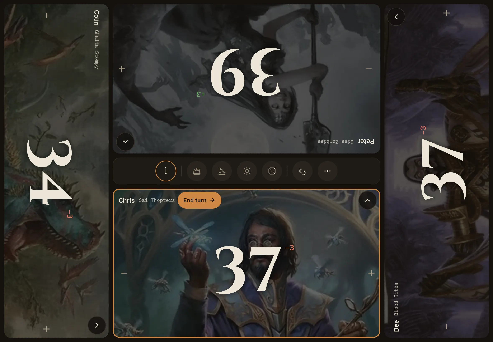
Tablet · now
Tablet · drawn

worst 3.26 · p5 3.42 · median 3.69
worst 5.00 · p5 5.20 · median 5.35
worst 4.21 · p5 5.57 · median 6.18
worst 5.39 · p5 6.12 · median 6.34
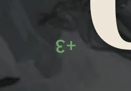
worst 3.22 · p5 3.27 · median 3.37
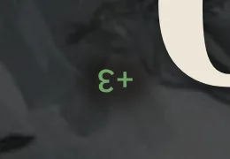
worst 4.81 · p5 5.05 · median 5.24
Portrait · now
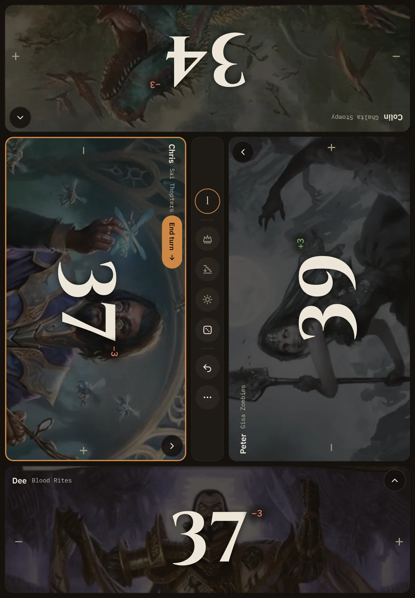
Portrait · drawn
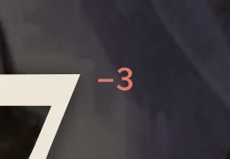
worst 3.26 · p5 3.42 · median 3.65
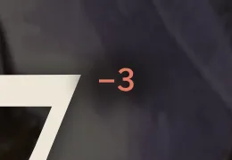
worst 4.95 · p5 5.19 · median 5.35
worst 4.21 · p5 5.57 · median 6.18
worst 5.39 · p5 6.12 · median 6.34
Phone, upright · now
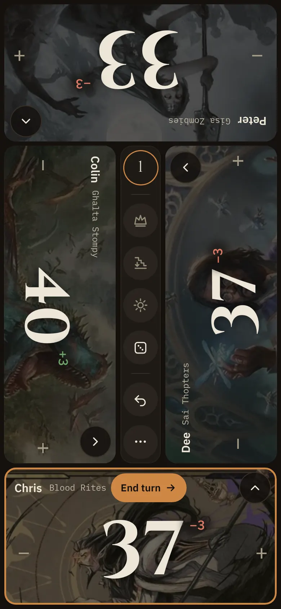
Phone, upright · drawn
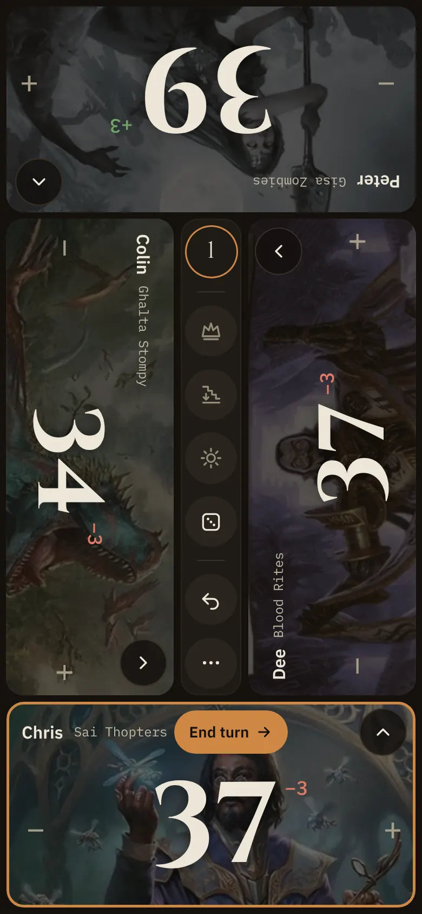
Phone, sideways · now
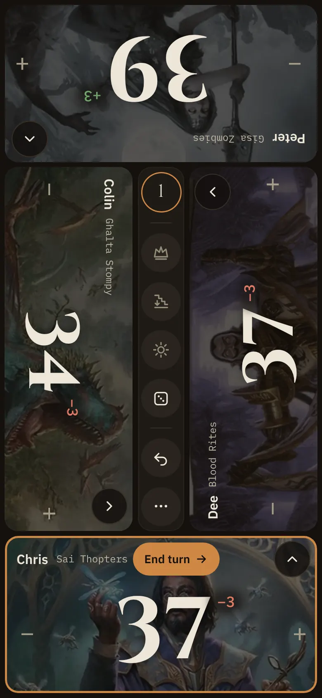
Phone, sideways · drawn
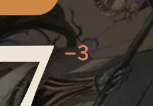
worst 2.84 · p5 3.64 · median 4.71
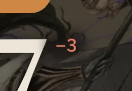
worst 4.52 · p5 5.33 · median 5.78
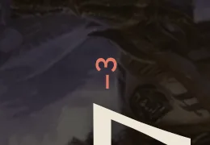
worst 3.29 · p5 3.65 · median 4.34
worst 4.93 · p5 5.33 · median 5.66
worst 2.61 · p5 3.25 · median 3.39
worst 4.38 · p5 5.02 · median 5.22
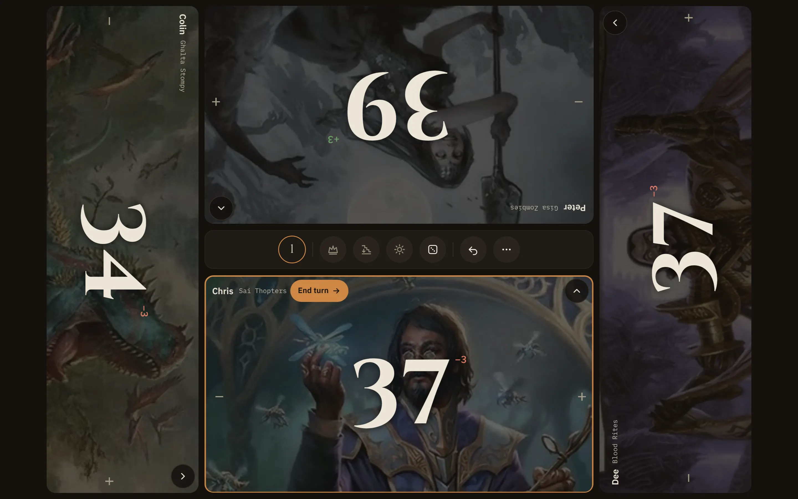
Desktop · now
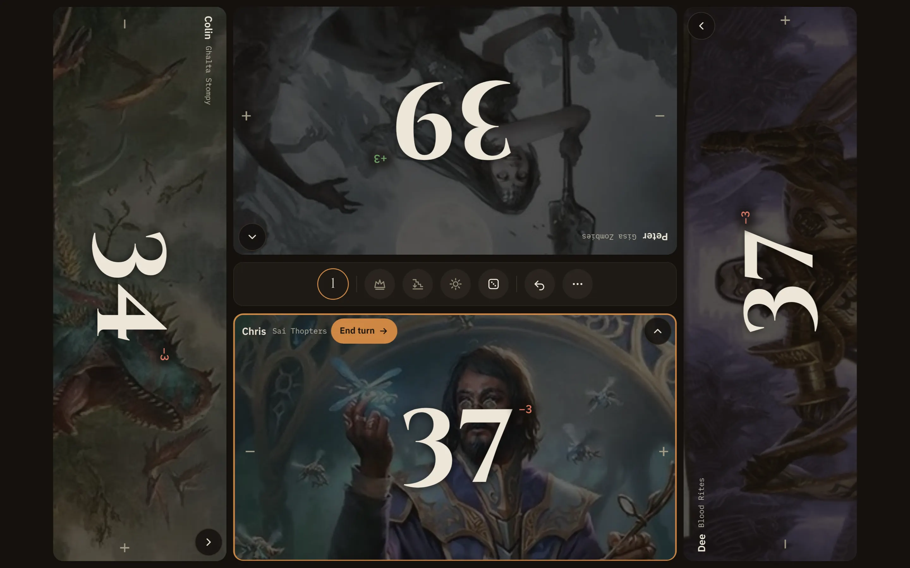
Desktop · drawn
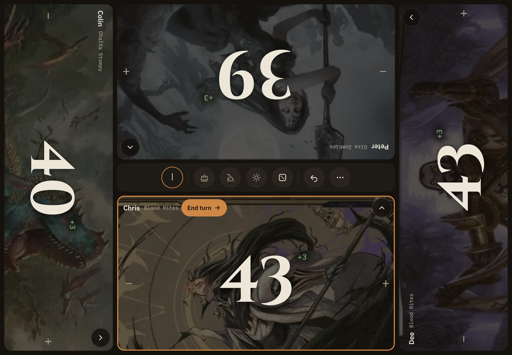
Four gains
Every seat pressed up. The +N wears the same halo as the −N.
worst 4.57 · p5 5.50 · median 5.85
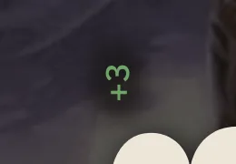
worst 4.99 · p5 5.18 · median 5.52

worst 4.81 · p5 5.05 · median 5.24
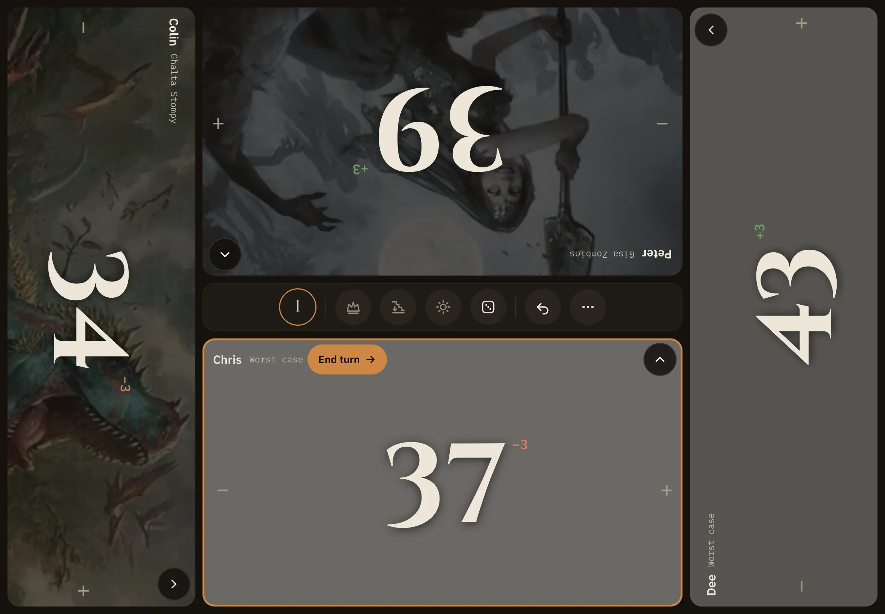
White plate · now
The figure over white: under 2:1.
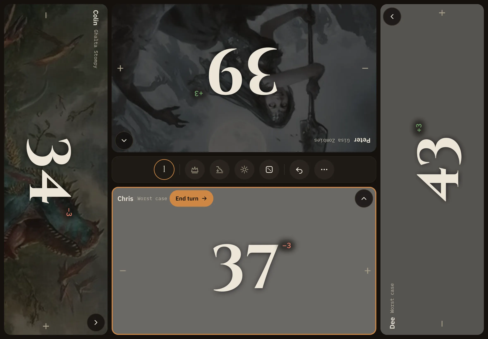
White plate · drawn
With the halo, 3.5:1 or better.